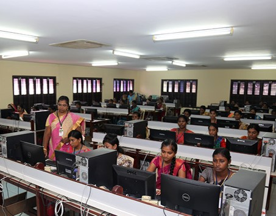

GOVINDAMMAL ADITANAR COLLEGE FOR WOMEN
Department of Computer Applications

Bachelor of Computer Application
Bachelor of Computer Applications is a 3 years under-graduate degree course awarded in India in the field of Computer Applications. The course aims at realizing the following student objectives: To demonstrate a sound knowledge in key areas of computer science or industrial computing.
The laboratories for Computer Applications offer best learning facilities to develop the technical skills
CONTACT US
POSTAL ADDRESS
GOVINDAMMAL ADITANAR COLLEGE FOR WOMEN
Thiruchendur-628 215
Tuticorin District
+91-04639 – 242184
Email - Id :gacw@aei.edu.in
Website : www.gacw.in